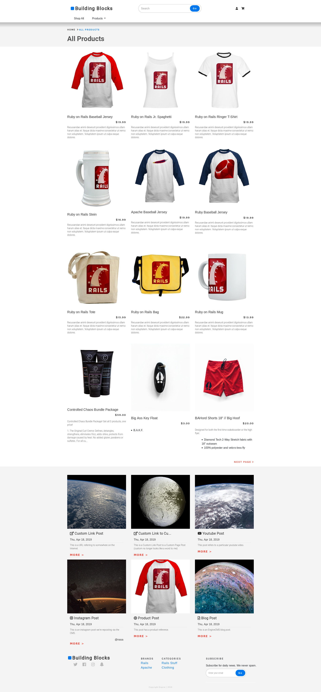
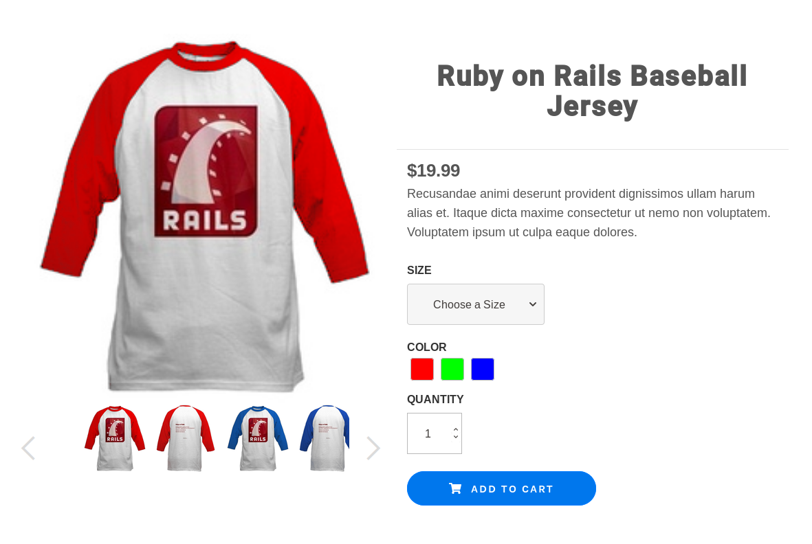

--------------------------------------------------------------------
| 2019 Resume | https://github.com/joshcampbell | campbelj@gmail.com |
--------------------------------------------------------------------
\ ^__^
\ (oo)\_______
(__)\ )\/\
||--www |
|| ||
I've been a professional software developer since 2008. Almost all the projects I've actually finished were written for money, and they're locked away in different companies' private repositories. I do have a few things up on Github, though!
Since 2016, I've worked on a variety of products at Gemini Development / Engine Commerce. I've implemented a series of modern UIs with Bootstrap, Vanilla JS, and React, and I've done intricate backend development and some light systems administration work in Rails, Heroku, and AWS with a brief dip into lambda / dynamoDB microservices.
The most photogenic work I did during this period was frontend work for a new Solidus-based Ecommerce platform. I implemented a series of complete store frontends with limited time and resources, with some supplementary work in design, QA, and project magement.

I got up to speed with more modern CSS development practices, working with Sass and Bootstrap 4 to implement some slick-looking site layouts.
The add-to-cart form is where a great deal of the complexity in an Ecommerce application comes together. I wrote one that works off of inlined lookup tables to minimize server round-trips, which handles resolving a collection of selected options to a single product variant record using client-side logic. This approach is often helpful in Rails applications, which often have a high minimum workload required to respond to any client requests.
I wrote a minimalist prototype in Vanilla JS for demo purposes, which was not designed to hold up through repeated changes, and I eventually replaced with a collection of unit-tested React components, which were.

As part of a job application process, I put together this singleplayer tic-tac-toe implementation which includes an "AI player" based on an algorithm which plays the game perfectly through brute-force examination of all potential future board states via the minimax algorithm.
There's nothing interesting going on here in terms of algorithms, but it does demonstrate that I'm capable of organizing a codebase. Functionality is broken out into components with clearly defined responsibilities, each with its own unit tests. It also uses a retro curses-based GUI and speaks to the player through a speech synthesis server, which gives it some personality.
I collaborated with Corey Bobco and other members of an Uncreative Writing group to build some tools for generating nonsense text using Markov chains, which we could then edit down into coherence, use as a jumping-off point for creative writing, or just appreciate as a new perspective on the source text(s).
You can interact with it using the command line, or through a web GUI backed by Flask.
If you want to have some fun with it, I recommend mashing up two incongrous texts that share some common words. (In my experience, the futurist manifestoes will mash up well with practically anything.)
My employer had me research different options for server configuration management and build a proof of concept. Ansible won out in the end because of the elegance of its YAML-based DSL for specifying server configurations, and their excellent decision to manage clients over standard SSH connections rather than running a special daemon. This is the presentation I gave to the team to explain the basic concepts involved.
Slides built with weenote (navigate with arrow keys)
My Dotfiles, which include an ansible installer
The design patterns movement in software development may be long past its peak, but I think the book that inspired it ("The Timeless Way of Building" by actual architect Christopher Alexander) is still worth reading for more general insights. This was basically a book report that I delivered to my coworkers in an attempt to get them to read it. The slides are Lessig Style and not very interesting on their own, but the repo also includes my lecture notes.
This is a self-contained in-place editing component that I wrote alongside Alex Williams for use in admin interfaces at Acumen Brands. It totals about 60 lines of code and 60 lines of tests, and I think it serves as a decent example of how to write Backbone objects and unit-test your frontend code.
I wrote this basic Wikipedia analytics application to teach myself how to make single-page apps. It integrates Flot for drawing graphs, Backbone to provide a little structure, and Bootstrap to make styling effortless. Unfortunately, I didn't really grasp the utility of event busses and unit tests at the time, so development stopped after the whole thing collapsed into callback soup. Code quality aside, it ended up as a nice little protoype and taught me a lot about JS and the MediaWiki API.
It's particularly fun to use it to find edit wars and vandalism.
Source (a zip archive)
Source Code | Built with markdown-styles | Header by cowsay